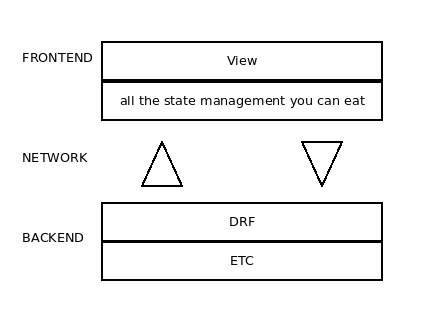
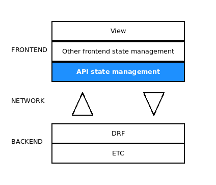

Django Rest Framework <3 Redux
JS Frontend framework agnostic state management
Why I'm talking about this
Django in brief
- Workhorse - not the new kid on the block
- For perfectionists with deadlines
- Opinionated
- Scalable team
- Well informed opinions => A good teacher
DRF in brief
- Quickest way to make REST apis if you are working with Django
- Easy to expose data from the ORM and other sources
- Web browsable api
- Auth is pretty solid, and compatible with guardian and dj-rest-auth if you need a lil something more
- Under the hood - function-based views => very flexible
- Saved my friggin life
Demo
Common architecture and needs
- CRUD and friends
- Fetch data at the right time
- Debounce - don't make the same call twice unless you want to
- Maintain a store of data: application state
- Monitor api call state
- Trigger side effects on call success/failure

Looks a little something like this
How about...
...we handle the api state and logic separately to the other state
Enter redux

- Little and strong state management library
- Can work wherever you run your JS code
- Commonly associated with React, but it's a totally separate thing
- Doesn't stop you from using another state management tool in parallel
Implements Flux pattern

Home automation
store = {
lighting: {
lounge: DIM,
kitchen: OFF
},
audio: {
track: "",
playing: OFF
},
discoBall: OFF
}
dispatch({
type: PLAY_AUDIO,
value: "https://www.youtube.com/watch?v=dQw4w9WgXcQ"
})
store = {
lighting: {
lounge: DIM,
kitchen: OFF
},
audio: {
track: "https://www.youtube.com/watch?v=dQw4w9WgXcQ",
playing: ON
},
discoBall: OFF
}
dispatch({
type: SET_LIGHTING,
room: "kitchen",
value: ON,
})
store = {
lighting: {
lounge: DIM,
kitchen: ON
},
audio: {
track: "https://www.youtube.com/watch?v=dQw4w9WgXcQ",
playing: ON
},
discoBall: OFF
}
What does this have to do with apis
store = {
FETCH_TODO_ITEMS: [{
"loading": true,
"requestData": {
"page": 1,
"assigneeUserId": 2,
},
"responseData": null,
"responseOk": null,
"error": null
}, {stuff...}, ... ]
UPDATE_TODO_ITEM: [...]
}
Demo time
Misc features
- Plays nice with redux debugger
- Easy to reason about forms and form errors
- Converts casing: snake <=> camel
- Wiki wiki Dj rest auth
The bad parts
- Redux is weird and sagas are weirder
- Learning curve
- Work in progress
Future work
- Sockets
- Rehydrate
- 2 step save
- Retries